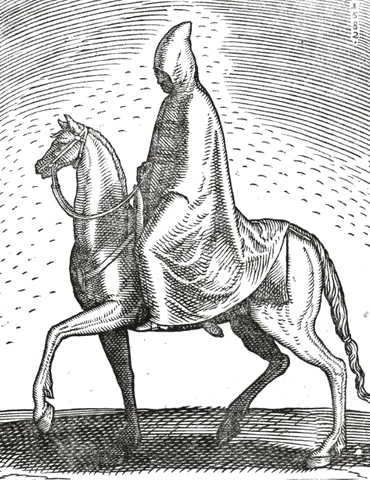
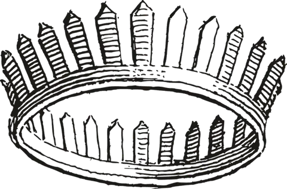

XV ғасырдағы саяси өзгерістер және алғашқы хандардың рөлі
Орындаған: Ерболатқызы Айкөркем · Топ: ХТОВ 26-5 2026 ж.

Алғышарттар
Хандық құрылуының төрт себебі
01
Әбілқайыр билігінің әлсіреуі
Ішкі қақтығыстар мен ойрат шапқыншылығы.
02
Керей мен Жәнібектің көші
1450-жылдары Шу мен Қозыбасыға қоныс аударды.
03
Тайпалардың бірігуі
Ортақ тіл, шаруашылық және аумақ.
04
Сауда жолдары
Сырдария қалаларына бақылау маңызды болды.
02

Алғашқы хандар
Керей мен Жәнібек
Хандықтың негізін қалаушылар. Керей — алғашқы хан, Жәнібек — оның ісін жалғастырушы. Олардың тұсында қазақ руларының басым бөлігі бір туның астына жиналды.